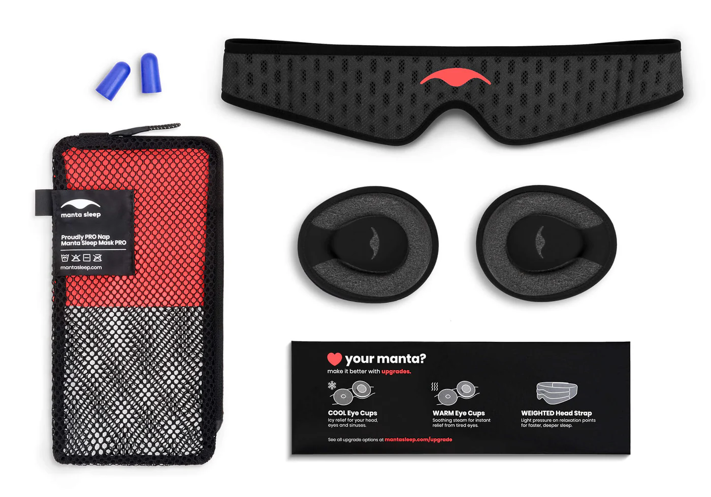

My Thoughts on the Manta 70$ Sleeping Mask
Hey guys!
Well the semester ended a while ago, and I was originally planning to make a summary of my semester, but I’ve decided to write a short blog on an expensive eye mask I bought a while ago.
To start, I always had some problems with sleeping. I fall asleep slowly and I often don’t have a good quality in sleep. One day, I saw on the internet about people recommending an eye mask from Manta, saying that it helped their sleep quality a lot.
I was really tempted after seeing all the good reviews, but the price point was pretty steep! The default version was around 40 dollars, the pro version was almost 80 dollars, and the version with headphones in it was 120 dollars!
Luckily, after a couple of weeks I finally got an internship offer, so I decided to make this expensive investment to myself. I would gladly spend a couple hundred to aid my sleeping. Plus, they claimed a 60 day no question asked return policy, so if I really didn’t like it I could just return it and get my money back.
Now, I had a couple of choices: The normal version, pro version or the bluetooth version. Originally, I was leaning towards the bluetooth headphone one, as I often sleep with earbuds on playing whitenoise. However, after some consideration I decided to order the pro version, since I saw several complaints saying that the bluetooth chips on the side is not that friendly for side sleepers.
The final price of the Manta Pro eye mask turned out to be 71 dollars, as they provided a 10 percent off for new customers.
The shipping was suprisingly quick, it only took around 3 or 4 days for it to arrive. However, when I opened the box, the box seems very broken and smashed. I’m not sure if this is FedEx’s fault or their fault, but it didn’t give me a great impression.

These are the contents of the eye mask: two C-shaped eye cups, a head band, some ear plugs and a washing bag. Their band is quite different than other eye masks, as it’s designed to wrap around your head, rather than having a strap on your ear that could cause pain the following day. The eye cups and the head band both have velcro, so you wan easily adjust how you want the eye cups to sit on the head band.
Now, I can say that this eye mask does indeed provide the 100% black out experience, if you adjust it correctly, you would not be able to see any light even with a flash light directly pointing towards your eyes. However, adjusting it correctly is a very difficult task; The first day I wore it I strapped the head band extremely tight, and it caused so much pain to the point that I had to remove it. The following day I made it less tight, but this resulted in light peaking through the side of my nose, and required several adjustments in the following days. I’m not sure if it’s due to my head shape, but adjusting this is extremely delicate, as it’s really difficult to get just the right angle and tightness to ensure a black out effect without causing discomfort.
Moreover, these eye masks are really heavy. You can clearly feel it’s presense on your head, and your eyes can get a bit hot due to the eye cup design covering your whole eye. Due to this heavy, clunky design, you also can’t really sleep face down, and side sleeping can feel a bit awkward at times as when your whole face is on the pillow, the eye mask will feel like it’s getting lifted slightly. These are compromises that the design had to take to ensure the black out, but it could be really annoying, or at least needs time to get used to.
Now let’s talk more about the head band, shall we?
The head band design is honestly pretty neat, as one of my biggest complaints of other eye masks is how they make the back of my ears hurt after wearing them for a while. This eye mask on the other hand wraps around your head instead, so it doesn’t really cause that specific issue. BUT, it causes another problem: if you often move/rotate around when sleeping (I saw a reddit comment describing this as sleeping like a rotisserie chicken), then moving will cause the band behind you head to shift due to friction, making it quite uncomfortable and even ruin the black out, making you have to re-adjust the headband.
In summary, the eye mask is not bad, but definitely not as good for me as other people mentioned. It’s pretty decent if light is a particularly huge issue for you, can accept a heavy thing on your head, and you don’t move as much when sleeping. For others though, it definitely takes a while to get used to. I got used to it after a couple months of constant usage, but for this price and this learning curve, I don’t know if I would recommend it for people who have similar sleeping habits as me.